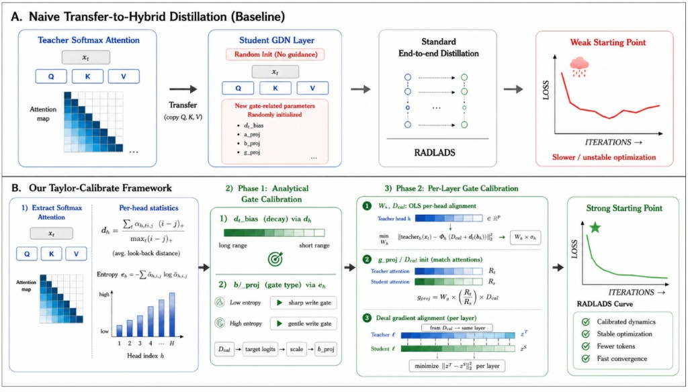

Taylor-Calibrate: Principled Initialization for Hybrid Linear Attention Distillation

Taylor-Calibrate is a lightweight initialization method for converting pretrained Transformers into hybrid Gated DeltaNet (GDN) students. Simply copying the teacher's attention projections leaves the new recurrent decay, write, and output-gating dynamics uncalibrated, so the converted model starts in a poor regime and wastes distillation tokens repairing its initialization. Taylor-Calibrate uses Taylor-guided teacher attention statistics to set the value projection, memory timescale, and gates, then applies a short per-layer alignment step. Across four teachers and three retained-layer policies, it produces substantially stronger zero-shot students — up to 88× lower initial perplexity in a representative ablation — and reaches matched recovery targets with 4.9×–9.2× fewer training tokens than naive conversion.
Highlights- Two-stage initialization: Taylor-guided calibration of memory timescale and gates, followed by a brief per-layer alignment step — before any full-model distillation.
- Stronger zero-shot students: up to 88× lower worst-case initial perplexity versus a naive projection copy.
- Cheaper recovery: reaches matched quality with 4.9×–9.2× fewer distillation tokens.
- Open-source: distills Qwen/Llama softmax-attention Transformers into hybrid GatedDeltaNet students.